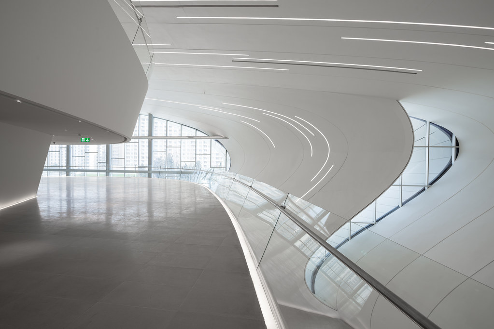
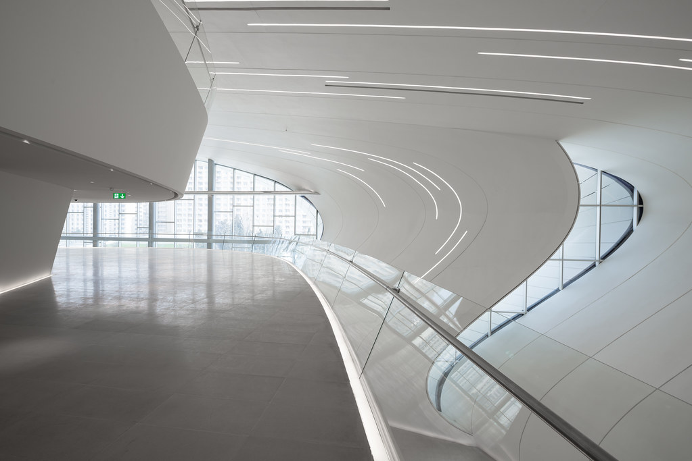
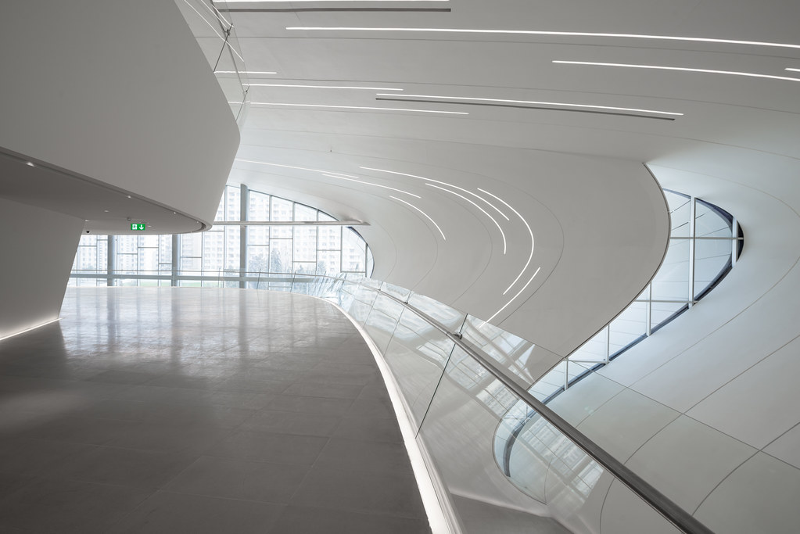
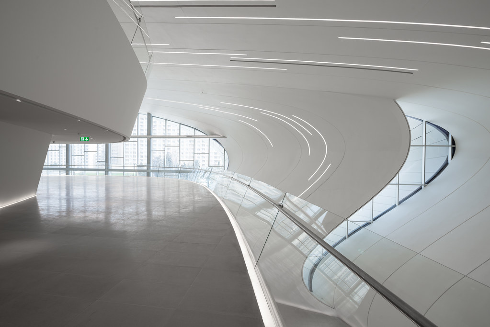

œuvres
Le Centre culturel Heydar-Aliyev à Bakou, Azerbaïdjan
 

Intérieur du Centre culturel Heydar-Aliyev à Bakou, Azerbaïdjan

Extérieur du Centre culturel Heydar-Aliyev à Bakou, Azerbaïdjan


 
